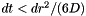
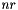
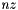

|
Layers
Diffusion in heterogeneous environments
|
|
Layers
Diffusion in heterogeneous environments
|
This documentation is generated automatically by Doxygen from the source code comments found in the *.c and *.h files. In particular, every external (variable, macro, function, etc.) has a documentation entry.
This documentation describes two programs, 3layer and fit-layer, available at https://github.com/dlewis24/layers .
This software implements the multilayer model of extracellular diffusion described in (Saghyan et al., 2012) and in (Arranz et al., 2014) for the case of 3 adjacent homogeneous layers of tissue. The software is useful in modeling or analyzing data from extracellular diffusion measurements made with the real-time iontophoretic (RTI) method (Nicholson and Phillips, 1981; Syková and Nicholson, 2008) of diffusion in 3 distinct layers that have different diffusion parameters. The two programs, 3layer and fit-layer, are described below. The program 3layer can also be used to model images from integrative optical imaging (IOI) (Nicholson and Tao, 1993) for the case of diffusion in 3 distinct layers that have different diffusion parameters.
The implementation described in (Saghyan et al., 2012) was in IDL. This implementation is in C and is described in (Arranz et al., 2014). It has some improvements over the IDL implementation, for example the addition of linear nonspecific clearance in the model.
Each layer is assumed to have a constant extracellular volume fraction  , a constant diffusion permeability
, a constant diffusion permeability  , and a constant nonspecific clearance factor
, and a constant nonspecific clearance factor  . The 3 layers we had in mind when writing this software are stratum oriens (SO), stratum pyramidale (SP), and stratum radiatum (SR) of the CA1 region of the hippocampus, which is why the names of the diffusion parameters end in _so, _sp, and _sr.
. The 3 layers we had in mind when writing this software are stratum oriens (SO), stratum pyramidale (SP), and stratum radiatum (SR) of the CA1 region of the hippocampus, which is why the names of the diffusion parameters end in _so, _sp, and _sr.
The environment modeled in the software consists of a cylinder of tissue through the layers. The axis of the cylinder goes through the point source and is perpendicular to each layer. The boundary conditions are zero concentration (total absorption) at the boundaries of the cylinder (top, bottom, and side). Cylindrical coordinates are used in order to take advantage of cylindrical symmetry and reduce computation times.
The software uses the Forward Time Centered Space (FTCS) finite difference scheme to solve the diffusion equation. This simple fully explicit scheme avoids having to deal with large sparse matrices. However, many time-steps must be used in order to meet the von Neumann stability criterion,  , which can result in long program run times, especially for the program fit-layer.
Note that the run time of each program depends heavily on the size of the grid used for the finite difference calculations (the  and  parameters).
Arranz AM, Perkins KL, Irie F, Lewis DP, Hrabe J, Xiao F, Itano N, Kimata K, Hrabetova S, Yamaguchi Y (2014) Hyaluronan deficiency due to Has3 knock-out causes altered neuronal activity and seizures via reduction in brain extracellular space. J Neurosci 34:6164-6176.
Nicholson C, Phillips JM (1981) Ion diffusion modified by tortuosity and volume fraction in the extracellular microenvironment of the rat cerebellum. J Physiol 321:225-257.
Nicholson C, Tao L (1993) Hindered diffusion of high molecular weight compounds in brain extracellular microenvironment measured with integrative optical imaging. Biophys J 65:2277-2290.
Saghyan A, Lewis DP, Hrabe J, Hrabetova S (2012) Extracellular diffusion in laminar brain structures exemplified by hippocampus. J Neurosci Methods 205:110-118.
Syková E, Nicholson C (2008) Diffusion in brain extracellular space. Physiol Rev 88:1277-1340.
Copyright (C) 2012-2013 David Lewis, CABI, NKI
This program is free software; you can redistribute it and/or modify it under the terms of the GNU General Public License as published by the Free Software Foundation; either version 2 of the License, or (at your option) any later version.
This program is distributed in the hope that it will be useful, but WITHOUT ANY WARRANTY; without even the implied warranty of MERCHANTABILITY or FITNESS FOR A PARTICULAR PURPOSE. See the GNU General Public License for more details.
You should have received a copy of the GNU General Public License along with this program; if not, write to the Free Software Foundation, Inc., 51 Franklin Street, Fifth Floor, Boston, MA 02110-1301, USA.
This software runs on Linux. It was developed on CentOS 5.6 and tested on Centos 6.0, Debian 6.0.4, and Gentoo, and it should compile and run on a recent version of any other Linux distribution. In order to compile and run the software, the following dependencies are needed:
The software outputs data in ASCII format, so it can be easily read into a plotting program like Gnuplot.
The full documentation can be generated locally with Doxygen. In order to do so Doxygen needs to be installed with LaTeX support. Doxygen will generate the html documentation using the file Doxyfile, the file doc/source/mainpage.h, and the source code for the programs 3layer and fit-layer. The html documentation will be output to the directory doc/html and can be read by pointing a browser to doc/html/index.html .
If the archive is downloaded as a .zip or .tar.gz file, the software can be extracted with unzip or tar. For example,
or
There is no special installation procedure. Individual programs are compiled separately with the 'make' utility. In order to avoid the user's having to specify the absolute or relative path each time a program is run, the programs 3layer and fit-layer can be copied to a directory in the user's path, or the PATH environment variable can be appropriately modified.
The program 3layer calculates the extracellular concentration of a substance as a function of time from a point source embedded in an environment comprised of 3 homogeneous layers. It outputs the extracellular concentration at the probe as a function of time, in order to model data from RTI diffusion measurements. It optionally outputs images showing the spatial distribution of the concentration at regularly-spaced time points in order to model data from integrative optical imaging (IOI) diffusion measurements.
To compile the program, run 'make' in the 3layer directory:
When you run 3layer you specify an input file of parameters, and when the program finishes it will write the calculated concentration to an output file. By default the output file will have the same basename as, but a different extension than, the input file. You can get a usage statement and a list of command-line options by running 3layer without specifying the input file:
(On Linux/Unix, the characters "./" preceding the program name mean "run the program from the current directory" and are not necessary if the current path is in your PATH environment variable.)
The program 3layer can take several minutes or hours to run, depending on the size of the grid and the speed of your computer.
Parameters to the program (such as the size of the environment and the diffusion parameters) can be specified in the input file or on the command line. If any parameter is specified both in the input file and on the command line, the parameter value specified on the command line takes precedence. If any parameter is not specified, its default value from the program is used. Parameter assignments in the input file are of the form <parameter name> = <value>.
The 3layer directory has an example input file called "sample.par". The comments in sample.par describe the input file format in more detail.
The location of the source defines the origin of the coordinate system used for input. As a result, positions specified in the input file or on the command line (such as the probe position) are relative to the source position; see the file coordinates.pdf. This convention was chosen to be consistent with that of the program fit-layer.
The output file includes a list of parameters and concentration data from the run. Note that some of the input parameters get adjusted by the program for a number of reasons:
 and
and  : The cylinder radius is adjusted if necessary to make the spatial resolutions in both the - and -directions equal.
: The cylinder radius is adjusted if necessary to make the spatial resolutions in both the - and -directions equal.The output file includes the extracellular concentration (not the tissue concentration) at the probe (column 2) as a function of time (column 1) and a "characteristic curve" fit to this data using the traditional model used in RTI analysis (column 3). The traditional model assumes that the environment consists of one homogeneous layer. Although the characteristic curve often closely matches the curve from the 3-layer model, the corresponding fit parameters (the "apparent parameters") are not physically meaningful, because the assumption of one homogeneous region is incorrect. In (Saghyan et al., 2012) average values of the "apparent parameters" from several data sets were used to parametrize a characteristic curve which was then input to fit-layer to find the diffusion parameters of the SP layer.
The 3layer directory also has an example output file, "sample.dat.orig". We generated the file from 3layer with the command
You can run
and compare your output file sample.dat with sample.dat.orig. The program might take a few minutes to run, depending on the speed of your computer.
The two output data files should differ in the following lines:
If the parameters or the concentration data of these two output files are substantially different for this test, please report it to the program's author.
The output files are in a format that can be graphed with gnuplot. For example,
If you plot the diffusion curve from the test run with the original data that was provided, the curves should be indistinguishable:
The program fit-layer fits the multilayer model to RTI data obtained in a region with 3 homogeneous layers in order to determine the diffusion parameters in the middle layer. The inverse problem is implemented with the downhill simplex algorithm, using for the forward problem the same multilayer model that 3layer uses.
As mentioned above, traditional analysis of RTI data assumes that the measurement region is homogeneous. If the region is not homogeneous, the diffusion parameters obtained from the traditional fitting procedure can be very inaccurate. For example, in the CA1 region of hippocampus we find that traditional analysis is adequate for determining the parameters in SO and SR, since the measurements in these layers can be made away from adjacent layers. However, RTI diffusion measurements in the thin SP layer are confounded by diffusion in the adjacent SO and SR layers, so multilayer analysis must be used to determine the diffusion parameters in SP.
To compile the program, run 'make' in the fit-layer directory:
When you run fit-layer you specify an input file of parameters and data, and when the program finishes it will write the fitted SP parameters and the corresponding concentration to an output file. By default the output file will have the same basename as, but a different extension than, the input file. You can get a usage statement and a list of command-line options by running fit-layer without specifying the input file:
The program fit-layer can take several minutes, hours, or even weeks to run, depending on the size of the grid and the speed of your computer.
The parameter assignment section of an input file for fit-layer is similar to an input file for 3layer. Parameters to the program (such as the size of the environment and the diffusion parameters) can be specified in the input file or on the command line. If any parameter is specified both in the input file and on the command line, the parameter value specified on the command line takes precedence. If any parameter is not specified, its default value from the program is used.
The parameter assignment section is followed by two blank lines and then followed by the data section. The data section has 2 columns: time (s) and concentration (mM). It can have other columns, which are ignored. The first line of the data section is the heading.
The fit-layer directory has an example input file called "data.txt". Data for this input file were taken from the output of 3layer, specifically from the file sample.dat.orig. Parameters for this input file were taken from sample.par, except for the SP parameters, which are to be determined by fit-layer. The comments in data.txt describe the input file format in more detail.
The location of the source defines the origin of the coordinate system used for input. As a result, positions specified in the input file or on the command line (such as the probe position) are relative to the source position; see the file coordinates.pdf.
This convention was chosen because in an RTI experiment distances from the source to the probe and to the layer boundaries are measured. It is natural for an experimenter to enter these values in the input file, rather than to specify positions relative to a fictitious boundary, such as the bottom of the cylinder.
The output file includes a list of parameters used for the fit. Note that some of the input parameters get adjusted by the program for a number of reasons:
and : The cylinder radius is adjusted if necessary to make the spatial resolutions in both the - and -directions equal.The output file also includes results of the fitting: the fitted values of , , and of the SP layer. Also included are details from the minimization algorithm used, such as the number of iterations, the size of the final simplex, and the total time for the program run.
The final section of the output file has concentration data for the probe location. The first two columns are concentration (column 2) as a function of time (column 1). This concentration was calculated using the multilayer model using the fitted parameters for the SP layer and the given parameters for the other layers. The last two columns are for the input concentration (column 4) as a function of time (column 3) – i.e., the concentration data taken from the input file.
The fit-layer directory also has an example output file, "data.dat.orig". We generated the file from fit-layer with the command
You can run
and compare your output file data.dat with data.dat.orig.
You can search for the fitted parameters with grep:
These fitted parameters correspond to the SP layer. They are close to the true values of = 0.10, = 0.30, and = 0.0 s^-1 for this test (values from sample.par). A small grid size (100 x 200) is used to reduce the total run time for this test. Nevertheless, the program might take several minutes to run, depending on the speed of your computer.
The two output data files should differ in the following lines:
If the parameters or the concentration data of these two output files are substantially different for this test, please report it to the program's author.
The output files are in a format that can be graphed with gnuplot. For example,
If you plot the diffusion curve from the test run with the original data that was provided, the curves should be indistinguishable:
 1.8.11
1.8.11